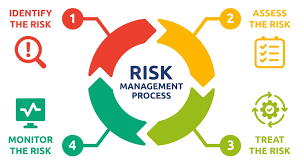
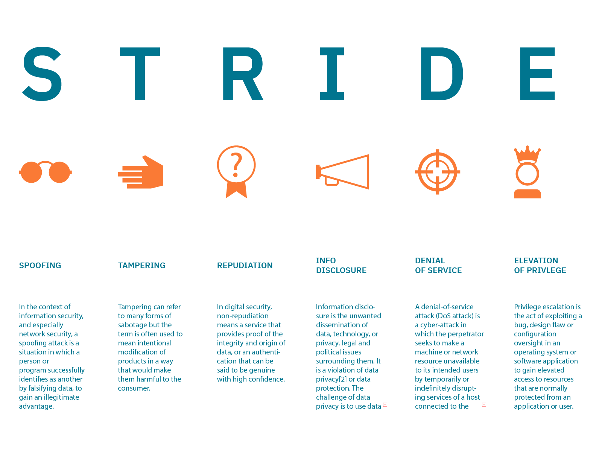
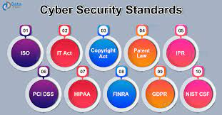
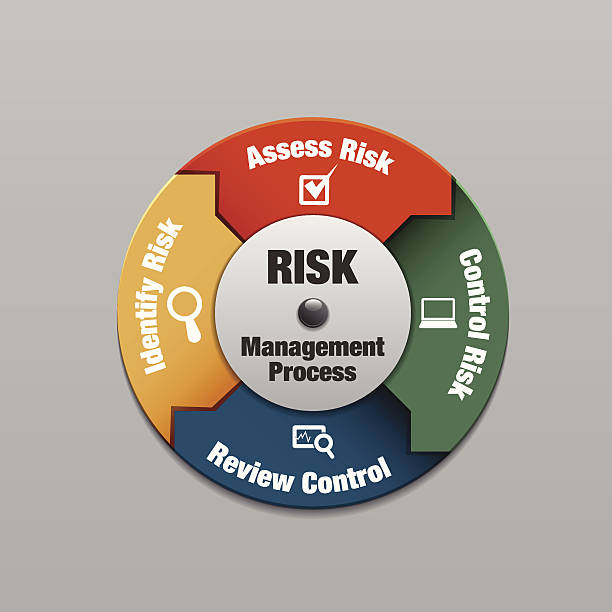

The Security and Risk Management Module offers a thorough analysis of security and risk management within corporate settings. It underscores the interconnected nature of security and risk, delving into strategies for effectively handling risks while safeguarding an organisation's assets. The module commences by exploring the intersections and interactions between security and risk, underscoring the significance of adopting an integrated approach rather than treating them in isolation. Subsequently, various risk assessment methods, encompassing qualitative and quantitative approaches, are discussed, with a focus on understanding their respective strengths and limitations.
Traditional risk models, including STRIDE, DREAD, and Attack Trees, as well as hybrid models, are reviewed to enhance the ability to identify and prioritize risks within an organization. The module also addresses prevalent security standards such as PCI-DSS, ensuring organizations accepting credit card payments uphold secure environments. Furthermore, it examines business continuity and disaster recovery solutions, aiding organizations in preparing for and responding to unforeseen events. Lastly, the module explores pivotal research areas and advancements propelling the fields of security and risk management. This encompasses emerging technologies like artificial intelligence and blockchain, along with innovative risk management frameworks and methodologies. Staying up to date with these developments empowers adeptly to manage security and risk in a business organisational contexts.
.

The risk management process encompasses various steps, with risk assessment being a crucial stage. Risk assessment can be broadly categorised into qualitative and quantitative methods, each serving distinct purposes.
Qualitative risk assessment involves a subjective evaluation of risks based on their characteristics, without numerical values. It relies on expert judgment and descriptive scales to categorize risks according to their potential impact and likelihood. This method is suitable when precise quantitative data is unavailable or impractical. For instance, in the early stages of a project, qualitative assessment can help identify potential risks, such as market uncertainties or changes in regulatory environments. On the other hand, quantitative risk assessment involves assigning numerical values to both the likelihood and impact of risks. This method is suitable when precise data is available and can be measured, allowing for a more quantitative analysis. For example, in a financial context, quantitative assessment can involve calculating the potential financial loss associated with investment risks or market fluctuations (Edgar and Manz, 2017).
In the risk management process, the identification and assessment phases are pivotal. During risk identification, potential risks are recognized and classified, setting the stage for subsequent assessment. In the risk assessment phase, qualitative or quantitative methods are applied to evaluate the likelihood and potential impact of identified risks. The prioritization step involves ranking risks based on their severity and likelihood, guiding the development of strategies in the treatment phase. Ultimately, the ongoing monitoring phase ensures that the implemented strategies effectively manage the identified risks over time.

During Week 3 and 4 of the Security and Risk Management module, we delved into the concept of Threat Modeling, exploring various approaches that are crucial in understanding and mitigating potential threats. The week proved to be a comprehensive journey, covering popular methodologies such as STRIDE, DREAD, Attack Trees, and hybrid models like the Process for Attack Simulation and Threat Analysis (PASTA).
One key takeaway was the diverse range of tools available for threat modelling, each with its own strengths and applications. STRIDE, for instance, provided a structured way to analyse and categorise threats based on different aspects like Spoofing, Tampering, Repudiation, Information Disclosure, Denial of Service, and Elevation of Privilege. DREAD, on the other hand, focused on risk assessment by evaluating the Damage, Reproducibility, Exploitability, Affected Users, and Discoverability of a potential threat.

In Week 5, the exploration of industry-specific security standards and directives exposed me to the diverse landscape of regulations that different sectors adhere to. The module encouraged us to not only identify these standards but also to understand how they impact risk assessments. I found this aspect crucial, as it highlighted the dynamic nature of security requirements across various industries.
Week 6 continued this exploration by delving into the practical application of standards in risk assessments such as NIST (2019), GDPR and PCI-DSS. The discussions on common industry and enterprise standards provided me with valuable insights into selecting the appropriate standards for different scenarios. The ability to list these standards and comprehend their relevance in diverse contexts has been a valuable skill developed during this module. Additionally, the module emphasised the importance of integrating standards into threat models, ensuring a comprehensive and effective approach to security.

In Week 7, the focus on QRM introduced me to various quantitative approaches, including Monte Carlo simulations and Bayes theorem-based methods. The discussions around principles and antipatterns for each approach emphasised the nuances involved in implementing these techniques effectively. The practical insights into multi-criteria decision analysis techniques such as TOPSIS, AHP, and ANP added another layer of complexity, showcasing the diverse tools available for risk modeling (Buijs and Zimmermann, 2018).
Week 8 further expanded my knowledge by delving into industry-specific security standards and directives. The examination of how these standards impact security and risk assessments provided a real-world context for the theoretical concepts explored earlier. Reviewing common industry and enterprise standards equipped me with the ability to select and apply the appropriate standards for a given situation.
.
Week 9 and 10 focused business continuity (BC) and disaster recovery (DR) plans. These two tools are essential in safeguarding organisations from unforeseen disruptions. As I progressed into the unit, I gained valuable insights into the intricacies of creating effective BC and DR plans.
The discussions on Business Impact Assessments (BIA), Recovery Time Objectives (RTOs), and Recovery Point Objectives (RPOs) were enlightening. Understanding how to assess the impact of a business disruption, determining the acceptable downtime, and establishing the maximum data loss tolerable are key components in crafting resilient plans. These concepts provided a practical framework for addressing potential risks and ensuring the continuity of critical business operations (Andrade et al., 2017).
The exploration of emerging trends in Information Risk Management during these weeks heightened my awareness of the dynamic nature of this field. The biggest takeaway from this particular week was that adapting to technological advancements and staying ahead of evolving threats is paramount.
.
Week 11 delved into current and emerging trends within the field. The focus on economic theory, artificial intelligence (AI), and automation provided a comprehensive view of the forces shaping the future of SRM. The unit encouraged us to critically evaluate each trend, considering their pros and cons and predicting their influence on future directions.
Personally, I found the exploration of emerging trends intriguing as it widened my perspective on the dynamic nature of SRM. The discussions around AI and automation, in particular, highlighted the transformative potential but also raised ethical concerns and potential drawbacks. This week allowed me to not only absorb information but also engage in thoughtful analysis, preparing me for the final debate in Week 12.
Reflecting on the final week of the module, I feel a sense of accomplishment in navigating through diverse topics within SRM. Reflecting on each week has been a valuable tool for organizing and showcasing my learning journey. This module has not only equipped me with a deeper understanding of SRM but also strengthened my analytical and communication skills, preparing me for future challenges in the ever-evolving landscape of security and risk management.